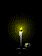
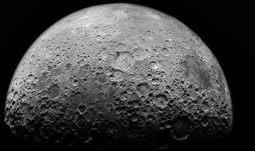
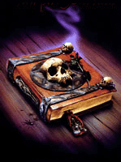

|  |
|
This is the first Friday the 13th in 240 years with a full moon. |
|||||
|
Root bah acidk|own / HTML bah Hackah Jak |
|||||
Friday the 13th is known for its horror features, for centuries it has been believed to be the night that the 12 most powerful witches and warlocks would meet in hell with Lucifer. On these nights years ago in the middle ages people feared as if hell would be coming to earth. Many would not come from their homes. Others that would worship Lucifer as a god and then would begin rituals of sacrificing other humans and animals, killing them and letting their souls and blood run down into the depths of hell. And by performing this act they would then start to feel immortality. Especially on a night where that the moon was full, it would bring them strength and visions from Lucifer. Many of times family members of the one that is being sacrificed would be forced to watch as their loved ones were slowly and painfully taken from this world down into hell. Sometimes, they were burned alive other times they would be slowly cut so that their blood would become secrete and then it would be used as a gift or offering to the witches and warlocks so that they can present it to Lucifer.
|  |  |
Greetz: Thank you to www.superduper.net for letting us root their super duper host boxin to do this super duper defacement...talk laterz, mmk... :)